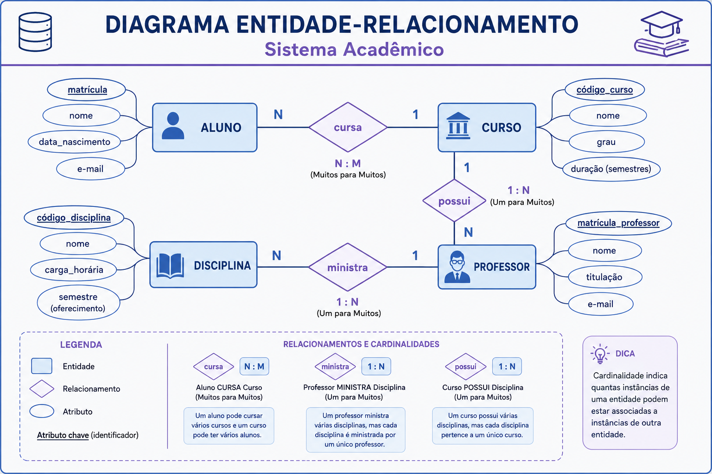

Modelo Entidade-Relacionamento (MER)
O MER é a etapa de modelagem conceitual que permite representar, de forma clara e independente de implementação, os elementos principais de um domínio: entidades, atributos, relacionamentos, cardinalidade e participação.
Objetivos de aprendizagem
- Identificar entidades, atributos e relacionamentos em um problema real.
- Classificar atributos simples, compostos, multivalorados e derivados.
- Determinar cardinalidade e participação em diferentes cenários.
- Aplicar o MER na modelagem de um domínio acadêmico ou de engenharia.
- Interpretar um diagrama ER como documentação conceitual do sistema.
1. O que é o MER
O Modelo Entidade-Relacionamento é uma técnica de modelagem conceitual proposta para representar os principais elementos de um domínio antes da implementação física do banco de dados. Ele descreve o que existe no mundo real que será armazenado, sem entrar ainda em detalhes de tabelas, índices ou SQL.
Em Engenharia de Computação, isso é especialmente útil porque ajuda a separar o problema da solução tecnológica. Primeiro entendemos a estrutura da informação; depois decidimos como implementá-la no SGBD.
2. Entidades, atributos e relacionamentos
| Elemento | Descrição | Exemplo |
|---|---|---|
| Entidade | Objeto ou conceito que precisa ser armazenado e identificado. | Aluno, Disciplina, Professor |
| Atributo | Característica que descreve uma entidade ou relacionamento. | nome, matrícula, carga horária |
| Relacionamento | Associação entre entidades. | Aluno matricula-se em Disciplina |
Uma forma prática de identificar entidades é perguntar: “isso precisa ter seus próprios dados e ser identificado de maneira independente?” Se a resposta for sim, provavelmente estamos diante de uma entidade.
3. Tipos de atributos
- Simples — não podem ser decompostos: CPF, matrícula, código.
- Composto — podem ser divididos em partes: endereço, nome completo, coordenadas.
- Multivalorado — podem ter mais de um valor para a mesma entidade: telefones, e-mails alternativos.
- Derivado — calculado a partir de outros dados: idade, tempo de serviço, média final.
Na prática de projeto, atributos multivalorados e derivados exigem atenção porque afetam a transição do modelo conceitual para o relacional.
4. Cardinalidade e participação
A cardinalidade indica quantas ocorrências de uma entidade podem se associar a outra. Já a participação informa se essa associação é obrigatória ou opcional.
| Conceito | O que significa | Exemplo |
|---|---|---|
| 1:1 | Uma ocorrência de A se relaciona com uma de B. | Pessoa ↔ CPF |
| 1:N | Uma ocorrência de A se relaciona com várias de B. | Professor → Turmas |
| N:M | Várias ocorrências de A se relacionam com várias de B. | Aluno ↔ Disciplina |
A participação pode ser pensada como uma regra de obrigatoriedade: alguns relacionamentos são obrigatórios, outros são opcionais. Isso define se um registro pode existir sem estar vinculado a outro.
5. Exemplo de modelagem
Considere um sistema acadêmico. Alguns elementos principais do domínio são:
- Entidades: Aluno, Curso, Disciplina, Professor.
- Relacionamentos: Aluno cursa Disciplina, Professor ministra Disciplina, Curso possui Disciplina.
- Atributos: nome do aluno, código da disciplina, carga horária, semestre.
Esse tipo de análise ajuda a reduzir ambiguidades e evitar que a implementação seja feita “direto no SQL” sem reflexão sobre o domínio.
6. Diagrama ER
O diagrama ER é a representação gráfica do modelo. Ele ajuda a comunicar a estrutura do sistema para desenvolvedores, analistas e stakeholders.

7. Erros comuns
- Confundir entidade com atributo.
- Modelar tudo como tabela sem refletir o domínio.
- Ignorar cardinalidade e participação.
- Usar nomes vagos, como “coisa” ou “dados”, em vez de termos do domínio.
Atividade em aula
Cenário: uma secretaria acadêmica precisa organizar informações de alunos, cursos e disciplinas em um modelo conceitual.
- Identifique pelo menos quatro entidades do cenário.
- Liste os principais atributos de cada entidade.
- Proponha ao menos dois relacionamentos com cardinalidade e participação.
- Desenhe o MER em grupo e explique suas escolhas em até 5 minutos.
8. Materiais complementares
- Revisar o capítulo introdutório sobre modelagem conceitual no livro-base da disciplina.
- Resolver exercícios de identificação de entidades, atributos e relacionamentos.
- Comparar o MER de um sistema acadêmico com o de um sistema de biblioteca.
Para pensar!
Para cada contexto represente o MER em papel com caneta, lápis ou outro material que evidencie a representação manual das soluções. Lembre de incluir pelo menos todas as entidades com seus atributos, relacionamentos e identificação da chave primária.
Exercício 1 — Colônia de Gatos Ciborgues
Contexto: Uma organização de pesquisa mantém uma colônia de gatos ciborgues em uma estação espacial. Cada gato é monitorado por sensores e participa de missões de reconhecimento.
Regras do domínio
- Cada Gato Ciborgue possui um identificador único (ID_gato), nome de registro, data de ativação, nível de energia atual e status (em missão, em manutenção, em repouso).
- Um gato pode ter vários Módulos Cibernéticos instalados; cada módulo tem código, tipo (visão noturna, reforço muscular, interface de rede, etc.), nível de versão e data de instalação.
- Um mesmo tipo de módulo pode ser instalado em vários gatos.
- A estação possui várias Missões de Reconhecimento com código, descrição, setor explorado, nível de risco e janela de tempo.
- Uma missão envolve um ou mais gatos; um gato pode participar de várias missões.
- Para cada missão são registradas Leituras de Sensores associadas ao gato e à missão, com tipo de sensor, valor e timestamp.
- Alguns gatos são designados como Líderes de Missão; cada missão deve ter exatamente um líder, que é um dos gatos participantes.
- Há Técnicos de Manutenção responsáveis pelos módulos, com ID, nome e especialidade, e registros de manutenção (data, tipo, técnico responsável).
Exercício 2 — Arena de Robôs Gladiadores
Contexto: Uma grande arena interplanetária organiza torneios de robôs gladiadores controlados por humanos, alienígenas e IAs autônomas.
Regras do domínio
- Cada Robô Gladiador possui ID único, nome, modelo, fabricante, ano de construção e classe (leve, média, pesada).
- Um robô é cadastrado por um Proprietário (humano, alienígena ou IA corporativa) com ID, nome, espécie/tipo e planeta ou estação de origem.
- A arena organiza Torneios com nome, edição, tipo (1x1, equipe, sobrevivência) e prêmio principal; cada torneio possui diversas Partidas.
- Cada Partida tem código, data/hora, arena física e modalidade, envolvendo pelo menos dois robôs e registrando qual robô ou equipe venceu.
- Robôs podem se organizar em Equipes de Combate com nome, planeta de origem e ranking; um robô pode pertencer a uma equipe ou lutar de forma independente.
- Há Módulos de Armas e Módulos de Defesa com ID, tipo (laser, plasma, escudo, armadura) e nível de potência; robôs podem equipar vários módulos, e um módulo pode estar em vários robôs.
- Após cada partida é gerado um Relatório de Desempenho associado a um robô e a uma partida, registrando danos recebidos, danos causados, tempo em combate e status final.
Exercício 3 — Rede de Estações de Pesquisa
Contexto: Uma aliança entre humanos e a espécie alienígena Thar’Kuun opera uma rede de estações de pesquisa em diferentes planetas. Soldados humanos protegem as estações; cientistas alienígenas conduzem experimentos.
Regras do domínio
- Cada Estação de Pesquisa possui ID, nome, planeta ou satélite, tipo de ambiente (deserto, gelo, atmosfera tóxica, órbita) e nível de segurança.
- Em cada estação atuam Equipes de Pesquisa com ID, área de estudo (biologia, materiais, energia escura) e data de início.
- Os Cientistas Thar’Kuun possuem ID, nome, especialidade e ciclo de vida, podendo participar de múltiplas equipes.
- Soldados Humanos possuem ID, nome, patente e unidade militar; são alocados a estações e podem ser transferidos ao longo do tempo.
- As estações podem armazenar Artefatos Alienígenas com ID, classificação (seguro, restrito, perigoso), origem e descrição; cada artefato é associado a uma estação e a uma equipe responsável.
- As equipes registram Experimentos com ID, título, objetivo, data de início e status; cada experimento pode envolver um ou mais artefatos e gera Relatórios de Experimento.
- O comando define Protocolos de Segurança com ID, nível (verde, amarelo, vermelho) e tipo (biológico, energético, psíquico), aplicados a estações e/ou artefatos; infrações geram Relatórios de Incidente.